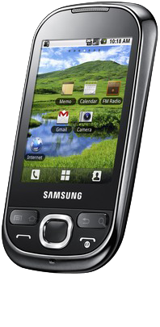

삼성 갤럭시 유로파
1. 외관

삼성전자가 2010년 6월에 출시한 안드로이드 스마트폰.
2. 사양
| 프로세서 | 퀄컴 스냅드래곤 S1 MSM7227 SoC. ARM11 600 MHz CPU, 퀄컴 Adreno 200 GPU | ||
| 메모리 | 256 MB DDR SDRAM, 512 MB 내장 메모리, micro SDHC (최대 32GB 지원) | ||
| 디스플레이 |
2.8인치 HVGA(320 x 240) RGB 서브픽셀 방식의 TFT-LCD (143 ppi) 정전식 터치 스크린 |
||
| 네트워크 | 기본 | HSDPA & HSUPA & UMTS, GSM & EDGE | Wi-Fi 802.11b/g, 블루투스 2.1+A2DP |
| - | - | ||
| 카메라 | 후면 200만 화소 AF | ||
| 배터리 | Li-lon 1200 mAh | ||
| 운영체제 | 안드로이드 2.1 (Eclair) → 2.2 (Froyo) | ||
| 규격 | 56 x 108 x 12.3 mm, 109 g | ||
3. 상세
삼성전자가 출시한 최초의 안드로이드 보급형 스마트폰이다.
갤럭시 스피카, 갤럭시 아폴로와는 다르게 퀄컴의 AP를 탑재했다. 같은 AP를 사용하는 기기로는 약 8개월 후에 공개된 갤럭시 에이스나 갤럭시 지오, 갤럭시 핏, 갤럭시 미니 등이 있고 옵티머스 원, 미라크 등이 있다. 하지만 램이 아직도 256 MB이며 배터리는 1200 mAh이다.